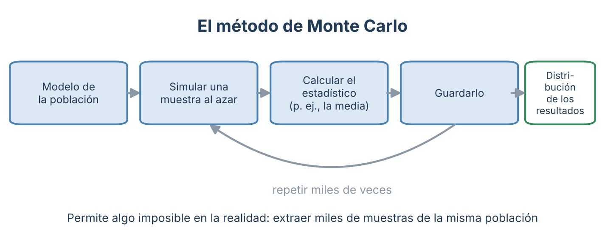
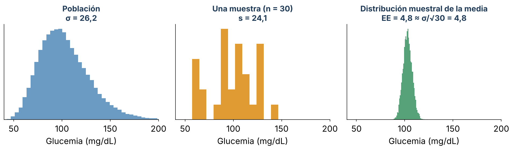
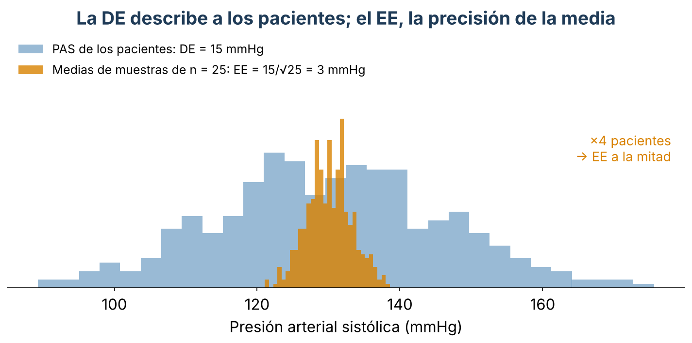
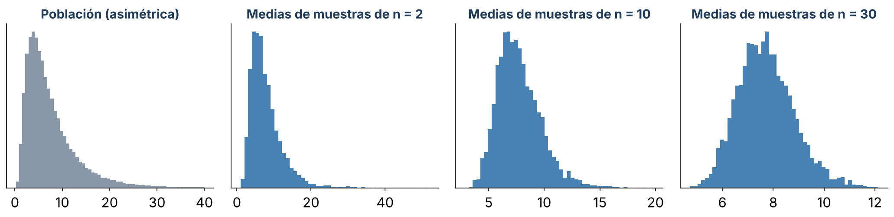

Bioestadística (1964) · Grado en Medicina · Curso 2027-2028
Tema 190Simulación de Monte Carlo y distribuciones muestrales
Módulo 4. Probabilidad
Evaluación: el examen del Módulo 4 se hace a mano. Resuelve primero cada ejercicio con papel y calculadora, y usa el código solo para comprobar.
Fernando Borrás Rocher · Universidad Miguel Hernández de Elche · CC BY 4.0
Objetivos de aprendizaje
Al terminar esta sesión serás capaz de:
- Explicar en qué consiste el método de Monte Carlo y para qué sirve.
- Distinguir la distribución de una variable en la población de la distribución muestral de un estadístico.
- Calcular e interpretar el error estándar de una media y de una proporción.
- Enunciar el teorema central del límite y comprobarlo por simulación con datos asimétricos.
- Explicar cómo influye el tamaño de la muestra en la precisión de una estimación.
- Medir la variabilidad de las respuestas de un modelo de lenguaje y reconocer la sobredispersión.
Cómo usar esta presentación
Usa el selector de arriba para dar el tema en una sesión completa o en dos sesiones intercaladas.
🎓 Sesión de clase magistral
- 1. Caso clínico de partida 5 min
- 2. Conceptos clave 10 min
- 5. Autoevaluación 5 min
Explica los conceptos, haz la pausa activa y cierra con las ideas clave.
💻 Sesión de Colab
- 3. Demostración: muestras simuladas 20 min
- 4. Práctica en la app Bioestadística 10 min
- 5. Autoevaluación 5 min
Cada estudiante abre su copia del cuaderno, predice el resultado y después ejecuta la celda.
Teclas: ← → para pasar · N notas del profesor · M cambiar de modo · F pantalla completa · Esc índice.
1. Caso clínico de partida
Cada residente obtiene una media distinta
- La media varía de una muestra a otra: es la distribución muestral.
- Su desviación típica es el error estándar: mide cuánto se equivoca una muestra típica.
2. Conceptos clave
2.1 El método de Monte Carlo
Monte Carlo: el tablero de Galton simulado
- Simular muchas veces un proceso aleatorio permite estimar probabilidades sin fórmulas.
- La simulación coincide con la teoría: es una forma de comprobar un cálculo.

2. Conceptos clave
2.2 Población, muestra y distribución muestral

| Distribución | Qué describe | Su dispersión |
|---|---|---|
| De la variable en la población | Cómo varían los pacientes | Desviación típica σ |
| De la variable en una muestra | Cómo varían los pacientes de esa muestra | Desviación típica muestral s |
| Muestral de la media | Cómo varía la media de una muestra a otra | Error estándar |
La distribución muestral de un estadístico es la distribución de los valores que tomaría ese estadístico en todas las muestras posibles del mismo tamaño.
2. Conceptos clave
2.3 El error estándar

| Estadístico | Error estándar |
|---|---|
| Media | $EE(\bar{x}) = \dfrac{\sigma}{\sqrt{n}} \approx \dfrac{s}{\sqrt{n}}$ |
| Proporción | $EE(\hat{p}) = \sqrt{\dfrac{p(1-p)}{n}}$ |
El error estándar disminuye con la raíz cuadrada de n: para reducirlo a la mitad hay que cuadruplicar la muestra.
No confundas la desviación típica (dispersión de los pacientes) con el error estándar (precisión de la media). Al aumentar la muestra, la desviación típica de los pacientes no cambia; el error estándar, sí.
2. Conceptos clave
2.4 El teorema central del límite
Teorema central del límite

- Aunque la variable sea asimétrica, la media de muestras grandes se distribuye casi como una normal.
- Por eso los intervalos de confianza y las pruebas del Módulo 5 funcionan con muchas variables clínicas.
Pausa activa
Piensa 30 segundos, comenta con quien tienes al lado y vota.
La PAS de una población tiene σ = 16 mmHg. ¿Cuál es el error estándar de la media en muestras de 64 pacientes?
En la sesión de Colab
Lo que acabas de ver se comprueba con datos en el cuaderno del Tema 190.
- Abre el cuaderno y guarda tu copia: Archivo → Guardar una copia en Drive.
- Ejecuta la celda de configuración.
- Ve a la demostración y predice cada resultado antes de ejecutar.
3. Demostración: muestras simuladas
3.1 Una población sintética de pacientes
▶ En tu cuaderno: 3.1 Una población sintética de pacientes. Antes de ejecutar, escribe qué esperas obtener.
Creamos una población de 100.000 ingresos por neumonía con una estancia asimétrica: la mayoría se va en pocos días y unos pocos permanecen mucho tiempo.
import numpy as np
import matplotlib.pyplot as plt
rng = np.random.default_rng(seed=190)
poblacion = rng.lognormal(mean=np.log(5.5), sigma=0.55, size=100_000).round(1) + 1
mu, sigma = poblacion.mean(), poblacion.std()
print(f"Media poblacional μ = {mu:.2f} días · desviación típica σ = {sigma:.2f} días")
plt.figure(figsize=(7, 4))
plt.hist(poblacion, bins=80, color="lightsteelblue", edgecolor="white")
plt.axvline(mu, color="firebrick", label=f"μ = {mu:.1f} días")
plt.xlim(0, 30)
plt.xlabel("Estancia (días)")
plt.ylabel("Número de pacientes")
plt.title("Población: estancia de 100.000 ingresos por neumonía")
plt.legend()
plt.show()3. Demostración: muestras simuladas
3.2 Una muestra, dos muestras, diez muestras
▶ En tu cuaderno: 3.2 Una muestra, dos muestras, diez muestras. Antes de ejecutar, escribe qué esperas obtener.
for i in range(1, 11):
muestra = rng.choice(poblacion, size=30, replace=False)
print(f"Muestra {i:>2}: media {muestra.mean():.2f} días")Cada residente obtendría un valor distinto, todos alrededor de μ. ¿Cuánto varían? Lo vemos con 10.000 muestras.
3. Demostración: muestras simuladas
3.3 La distribución muestral de la media
▶ En tu cuaderno: 3.3 La distribución muestral de la media. Antes de ejecutar, escribe qué esperas obtener.
def medias_muestrales(n, repeticiones=10_000):
"""Medias de muchas muestras aleatorias de tamaño n de la población."""
return np.array([rng.choice(poblacion, size=n).mean() for _ in range(repeticiones)])
fig, ejes = plt.subplots(1, 3, figsize=(13, 3.8), sharex=True)
for eje, n in zip(ejes, [5, 30, 120]):
medias = medias_muestrales(n)
ee_teorico = sigma / np.sqrt(n)
eje.hist(medias, bins=60, density=True, color="lightsteelblue", edgecolor="white")
x = np.linspace(medias.min(), medias.max(), 200)
eje.plot(x, np.exp(-((x - mu) ** 2) / (2 * ee_teorico ** 2)) / (ee_teorico * np.sqrt(2 * np.pi)),
color="firebrick", label="Normal del TCL")
eje.set_title(f"n = {n}\nEE simulado {medias.std():.2f} · teórico {ee_teorico:.2f}")
eje.set_xlabel("Media de la muestra (días)")
ejes[0].legend()
plt.tight_layout()
plt.show()Tres observaciones fundamentales:
- Las medias se concentran alrededor de μ: la media muestral no tiene sesgo.
- Al aumentar n, la distribución se estrecha: el error estándar simulado coincide con σ/√n.
- La población es muy asimétrica. Aun así, con n = 30 o más, la distribución de la media ya es casi normal: es el teorema central del límite. Con n = 5 todavía se aprecia la asimetría.
3. Demostración: muestras simuladas
3.4 El 95 % de las medias
▶ En tu cuaderno: 3.4 El 95 % de las medias. Antes de ejecutar, escribe qué esperas obtener.
Si las medias siguen aproximadamente una normal, el 95 % de ellas estará a menos de 1,96 errores estándar de μ. Lo comprobamos:
n = 30
medias = medias_muestrales(n)
ee = sigma / np.sqrt(n)
dentro = np.abs(medias - mu) < 1.96 * ee
print(f"Medias a menos de 1,96 EE de μ: {dentro.mean():.1%}")Esta es la idea del intervalo de confianza del Tema 200. Si cada residente construye el intervalo media ± 1,96 EE con su muestra, alrededor del 95 % de esos intervalos contiene el verdadero valor μ.
3. Demostración: muestras simuladas
3.5 Tamaño muestral y precisión
▶ En tu cuaderno: 3.5 Tamaño muestral y precisión. Antes de ejecutar, escribe qué esperas obtener.
tamanos = np.array([10, 20, 40, 80, 160, 320, 640])
ee_simulado = [medias_muestrales(n, 3000).std() for n in tamanos]
plt.figure(figsize=(7, 4))
plt.plot(tamanos, ee_simulado, marker="o", label="Simulado")
plt.plot(tamanos, sigma / np.sqrt(tamanos), linestyle="--", label="σ / √n")
plt.xscale("log")
plt.xticks(tamanos, tamanos)
plt.xlabel("Tamaño de la muestra (escala logarítmica)")
plt.ylabel("Error estándar de la media (días)")
plt.title("Cuadruplicar la muestra reduce el error estándar a la mitad")
plt.legend()
plt.show()3. Demostración: muestras simuladas
3.6 La distribución muestral de una proporción
▶ En tu cuaderno: 3.6 La distribución muestral de una proporción. Antes de ejecutar, escribe qué esperas obtener.
Lo mismo ocurre con las proporciones. Si la prevalencia real de diabetes en una población es del 18 %, ¿cuánto varía la prevalencia estimada en muestras de 100 pacientes?
A mano: $EE = \sqrt{0{,}18 \times 0{,}82 / 100} \approx 0{,}038$. El 95 % de las muestras dará una prevalencia entre 0,18 ± 1,96 × 0,038. Es decir, entre el 10,5 % y el 25,5 % aproximadamente.
p = 0.18
prevalencias = rng.binomial(n=100, p=p, size=10_000) / 100
print(f"EE simulado: {prevalencias.std():.3f} · teórico: {np.sqrt(p * (1 - p) / 100):.3f}")
print(f"Percentiles 2,5 y 97,5 de la prevalencia estimada: {np.percentile(prevalencias, [2.5, 97.5])}")3. Demostración: muestras simuladas
3.7 La variabilidad de un modelo de lenguaje
▶ En tu cuaderno: 3.7 La variabilidad de un modelo de lenguaje. Antes de ejecutar, escribe qué esperas obtener.
En el Tema 170 modelamos el número de aciertos de un modelo de IA con una binomial. Ese modelo asume que todas las preguntas tienen la misma probabilidad de acierto. En la práctica, unas preguntas son fáciles para el modelo y otras muy difíciles. Simulamos 50 preguntas con dificultad variable y repetimos el «examen» muchas veces.
n_preguntas, repeticiones = 50, 5000
# Probabilidad de acierto de cada pregunta: media 0,8, pero muy desigual
p_pregunta = rng.beta(a=2, b=0.5, size=n_preguntas)
print(f"Probabilidad media de acierto: {p_pregunta.mean():.2f}")
# Cada repetición del examen responde a las mismas 50 preguntas
aciertos_reales = (rng.random((repeticiones, n_preguntas)) < p_pregunta).sum(axis=1)
# Lo que predeciría una binomial con la misma media
aciertos_binomial = rng.binomial(n_preguntas, p_pregunta.mean(), size=repeticiones)
print(f"Varianza con dificultad desigual: {aciertos_reales.var():.2f}")
print(f"Varianza de la binomial: {aciertos_binomial.var():.2f}")Aquí ocurre algo contraintuitivo: repitiendo el mismo examen, la variabilidad es menor que la de la binomial. Las preguntas fáciles se aciertan casi siempre y las difíciles casi nunca. En cambio, supón que cada repetición es un examen de un área distinta: unas áreas le resultan fáciles al modelo y otras difíciles. Entonces la probabilidad media de acierto cambia de un examen a otro. La variabilidad es mayor que la binomial: es la sobredispersión.
p_area = rng.beta(a=8, b=2, size=repeticiones) # acierto medio de cada área: 0,8 en promedio
examenes_por_area = rng.binomial(n_preguntas, p_area)
p_media = p_area.mean()
print(f"Varianza con exámenes de áreas distintas: {examenes_por_area.var():.2f}")
print(f"Varianza de la binomial con p = {p_media:.2f}: {n_preguntas * p_media * (1 - p_media):.2f}")Conclusión práctica: antes de aplicar un modelo de probabilidad a los resultados de un modelo de IA, responde a dos preguntas. ¿Qué se repite: la misma pregunta, el mismo examen o exámenes distintos? ¿Es realmente constante la probabilidad de acierto?
Ampliación
Ampliación: la misma pregunta, muchas veces, al modelo real
Con una clave configurada, esta celda repite 10 veces una misma pregunta con temperatura alta y cuenta las respuestas distintas. Sin clave, no hace nada.
Esta celda prepara la conexión con el modelo de lenguaje (Tema 80). Lee la clave de Secretos sin mostrarla. Si no hay clave, el cuaderno funciona con respuestas de ejemplo. Si el modelo indicado ya no existe, cambia la variable MODELO.
%pip install -q google-genai
MODELO = "gemini-2.5-flash"
try:
from google.colab import userdata
from google import genai
from google.genai import types
cliente = genai.Client(api_key=userdata.get("GEMINI_API_KEY"))
print("Conexión preparada con el modelo", MODELO)
except Exception as error:
cliente = None
print("Sin clave o fuera de Colab: se usarán respuestas de ejemplo.", type(error).__name__)
def preguntar(prompt, temperatura=0.2):
"""Envía un prompt al modelo y devuelve su texto (None si no hay conexión)."""
if cliente is None:
return None
respuesta = cliente.models.generate_content(
model=MODELO,
contents=prompt,
config=types.GenerateContentConfig(temperature=temperatura),
)
return respuesta.textfrom collections import Counter
pregunta = ("Un paciente con fiebre, tos productiva y crepitantes en la base derecha. "
"¿Cuál es el diagnóstico más probable? Responde con dos palabras como máximo.")
if cliente is not None:
respuestas = [preguntar(pregunta, temperatura=1.5).strip().lower().rstrip(".") for _ in range(10)]
print(Counter(respuestas))
else:
print("Configura tu clave para hacer el experimento con el modelo real.")Ampliación
Ampliación: errores frecuentes
Confundir desviación típica y error estándar al leer un artículo. Una media «± 0,4» puede ser una desviación típica muy pequeña o un error estándar con una dispersión grande.
Pensar que la muestra debe ser una fracción grande de la población. La precisión depende sobre todo del tamaño absoluto de la muestra, no del porcentaje de la población.
Aplicar el teorema central del límite a muestras muy pequeñas de variables muy asimétricas.
Creer que el TCL hace normales los datos. Lo que se aproxima a la normal es la media de muchas muestras, no la distribución de los pacientes.
Olvidar que la simulación tiene su propio error: con pocas repeticiones, el resultado de un Monte Carlo también varía.
Ampliación
Ampliación: Simulación de Monte Carlo y método de la transformación inversa
Una simulación de Monte Carlo estima una probabilidad repitiendo un experimento aleatorio muchas veces en el ordenador. Es la técnica que usa este tema para estudiar la media muestral.
Para simular una distribución cualquiera basta un generador uniforme entre 0 y 1. El método de la transformación inversa aplica a cada número uniforme u la inversa de la función de distribución. Para una exponencial de media μ: $t = -\mu \ln(1-u)$.
En tus materiales SIMUSTAT: Tema 320. Simulación de Monte Carlo y las distribuciones muestrales, apartado 1 y 2.
import math
rng = np.random.default_rng(320)
u = rng.uniform(size=100_000)
t = -6 * np.log(1 - u) # exponencial de media 6 min (Tema 180)
print(f"Media simulada: {t.mean():.2f} min (teórica: 6)")
print(f"P(T > 15) simulada: {(t > 15).mean():.4f} | exacta: {math.exp(-15 / 6):.4f}")
plt.hist(t, bins=80, density=True, color="steelblue", alpha=0.7, label="Simulación")
x = np.linspace(0, 40, 200)
plt.plot(x, np.exp(-x / 6) / 6, color="orange", lw=2, label="Densidad teórica")
plt.xlim(0, 40)
plt.xlabel("Minutos")
plt.legend()
plt.show()Con 100.000 repeticiones, la simulación difiere del cálculo exacto en menos de una milésima. Cuando no hay fórmula, la simulación da la respuesta; con más repeticiones, la estimación es más precisa.
4. Práctica en la app Bioestadística
Abre la unidad 190 de la app Bioestadística y completa sus misiones:
- Misión básica (sin asistente): calcular a mano el error estándar de medias y proporciones con distintos tamaños muestrales.
- Misión clínica (con pistas): simular la distribución muestral de la prevalencia de hipertensión con muestras de 50, 200 y 800 pacientes.
- Misión reto (con asistente): repetir 20 veces una pregunta clínica a un modelo de IA y registrar las respuestas. Discutir si un modelo binomial describe su variabilidad.
Al terminar, exporta el informe de la unidad.
5. Autoevaluación
Responde a mano, sin asistente y sin ejecutar código.
5. Autoevaluación
Elige una opción: verás la explicación.
La PAS de una población tiene σ = 16 mmHg. ¿Cuál es el error estándar de la media en muestras de 64 pacientes?
Para reducir a la mitad el error estándar de una media, ¿cuánto hay que aumentar la muestra?
¿Qué afirma el teorema central del límite?
Una prevalencia real del 50 % se estima con muestras de 100 personas. ¿Cuál es el error estándar de la proporción?
Al pasar de 50 a 500 pacientes en un estudio, ¿qué ocurre con la desviación típica de la edad de los pacientes?
Ideas clave
- El método de Monte Carlo estima cantidades repitiendo muchas veces un experimento simulado.
- La media de una muestra varía de una muestra a otra; su dispersión es el error estándar, σ/√n.
- El teorema central del límite hace que la media muestral sea aproximadamente normal con muestras grandes.
- Alrededor del 95 % de las medias muestrales está a menos de 1,96 EE de la media poblacional: es la base del intervalo de confianza.
- Antes de modelar los aciertos de un modelo de IA, hay que comprobar si la probabilidad de acierto es constante.
Glosario
| Término | Definición |
|---|---|
| Método de Monte Carlo | Estimación de una cantidad mediante la repetición de experimentos aleatorios simulados |
| Estadístico | Valor calculado a partir de una muestra |
| Distribución muestral | Distribución de un estadístico en todas las muestras posibles de un mismo tamaño |
| Error estándar | Desviación típica de la distribución muestral de un estadístico |
| Teorema central del límite | Resultado según el cual la media muestral se aproxima a una normal al aumentar n |
| Estimador insesgado | Estimador cuya distribución muestral está centrada en el parámetro |
| Sobredispersión | Variabilidad mayor que la que predice el modelo de probabilidad supuesto |
Para saber más
- Altman DG, Bland JM. Standard deviations and standard errors. BMJ. 2005;331(7521):903. doi:10.1136/bmj.331.7521.903
- Metropolis N, Ulam S. The Monte Carlo method. J Am Stat Assoc. 1949;44(247):335-341. doi:10.1080/01621459.1949.10483310
- SIMUSTAT Unidigital UMH. Tema 320. Simulación de Monte Carlo y las distribuciones muestrales. Cuaderno de Google Colab. Elche: Universidad Miguel Hernández; 2023.